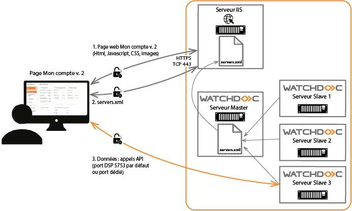
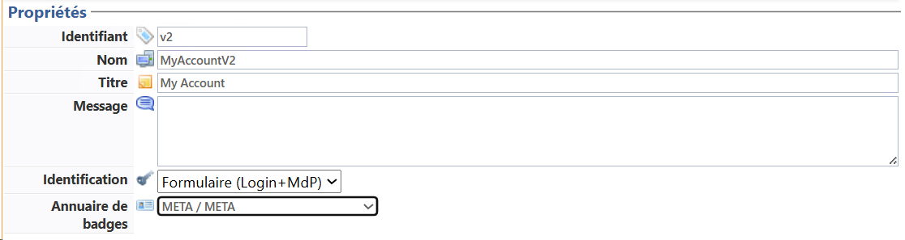
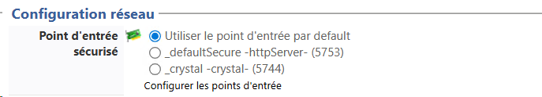
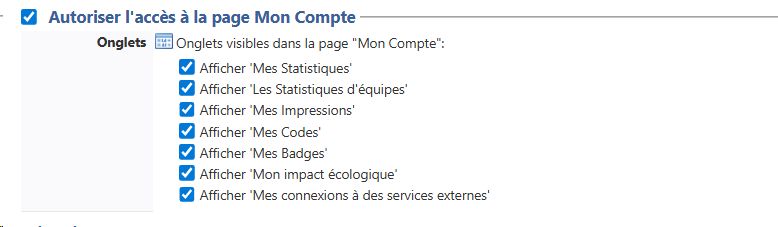

Prérequis
Pour activer la page Mon Compte v. 2, les prérequis suivants doivent être respectés :
-
Flux et ports :
Flux entre Page de déblocage /
Mon Compte v. 1Page Mon Compte v. 2 Poste de travail IIS 443 443 IIS Watchdoc Service 5744 non-concernée Poste de travail Watchdoc service non-concernée • 5753 en cas d'installation initiale
• ou 5753 en cas de mise à jour, mais avec risque d'avoir à réinstaller les WES dotés d'un certificat ;
• ou port dédié (par exemple 5759) en cas de mise à jour pour éviter d'avoir à réinstaller les WES si c'est trop contraignant.
-
Certificats
-
Par défaut, le port 5753 est sécurisé par un certificat auto-signé.
-
Pour plus de sécurité, nous vous recommandons de faire signer ce certificat par votre autorité de certification.
-
Idem si vous choisissez un port dédié autre que le 5753, qui aura tout intérêt à être sécurisé par un certificat signé par votre autorité de certification (cf. Gérer les certificats - Faire signer un certificat).

-
{kind=link}
Installer
En cas de nouvelle installation, la page Mon Compte v. 2 est automatiquement installée avec Watchdoc v. 6.1.1.
Dans le cas d'une mise à jour, il est nécessaire d'installer l'outil MS URL Rewrite (cf. Installer la page Mon compte v.2).
Configurer la section Propriétés
Dans cette section, vous indiquez les propriétés principales du profil Web :
-
Identifiant : saisissez l'identifiant du profil web. Il peut être composé de lettres, de chiffres et du caractère '_' pour un maximum de 64 caractères. Cet identifiant n'est affiché que dans les interfaces d'administration.
-
Nom : saisissez le nom du profil Web. Ce nom, explicite, n'est affiché que dans les interfaces d'administration.
-
Type de profil : sélectionnez le type "Mon compte v2" ;
-
Titre : saisissez le titre du profil Web qui doit s'afficher dans l'interface dédiée à l'utilisateur ;
-
Message : si nécessaire, saisissez un message, affiché dans la page d'identification. Ce message peut -être destiné à aider l'utilisateur.
-
Identification : définissez le mode selon lequel l'utilisateur s'identifie dans l'interface :
-
Formulaire (Login + MdP) : ce mode permet d'afficher dans le site web un formulaire dans lequel les utilisateurs s'authentifient à l'aide de l'identifiant (login) et mot de passe de leur compte.
Ce mode peut être utile pour résoudre des problèmes de compatibilités SSO depuis certains navigateurs (cf. Problème d'authentification à Watchdoc depuis Safari ou Firefox).
-
Intégrée Windows : ce mode permet d'identifier les utilisateurs dans Watchdoc par transfert automatique de leur identifiant MS Windows ;
-
Externe : ce mode permet d'identifier les utilisateurs qui se connectent à Watchdoc à l'aide d'un annuaire externe (tel que Entra ID, par exemple) ;
-
-
Annuaire de badges : sélectionnez l'annuaire dans lequel sont référencés les badges des utilisateurs qui se connectent par badge :

{kind=link}
Configurer la section Configuration réseau (Mon compte v. 2)
Dans cette section, sélectionnez le point d'entrée sécurisé (par un certificat de confiance) validé par les navigateurs des postes utilisateurs pour accéder à la page Mon compte v. 2.
Par défaut, Watchdoc est sécurisé à l'aide d'un certificat autosigné.
Les points d'entrée sécurisés qui figurent dans cette liste sont configurés dans l'interface Serveur Web : 
{kind=link}
Si vous souhaitez sécuriser la page Mon Compte v. 2 à l'aide d'un autre certificat et que vous n'avez pas encore configuré les points d'entrée, cliquez sur le lien Configurer les points d'entrée pour accéder à l'interface dédiée (cf. Configurer le serveur web et les certificats).
Autoriser les accès aux informations du compte
La page Mon Compte permet à l'utilisateur d'accéder à ses informations personnelles. Elle peut comporter plus ou moins d'onglets en fonction de sa configuration.
-
Autoriser l'accès à la page Mon Compte : cochez la case pour mettre la page à disposition des utilisateurs, puis cochez les cases correspondant aux pages à y afficher :
-
Onglet Mes statistiques : permet à l'utilisateur d'accéder à une synthèse de son utilisation ainsi qu'à l'impact environnemental de son activité d'impression d'une période choisie.
-
Onglet Les statistiques d'équipes : permet à l'utilisateur d'accéder à une synthèse de l'utilisation ainsi qu'à l'impact environnemental de l'activité d'impression de son équipe durant une période choisie.
Précisez ensuite dans la section Statistiques :
-
la période pour laquelle vous souhaitez afficher les statistiques ;
-
si vous souhaitez afficher le coût à la page aux utilisateurs ;
-
si vous souhaitez afficher la section Vous et les autres permettant de comparer l'activité d'impression de l'utilisateur à celle de tous les autres utilisateurs de Watchdoc
-
Onglet Mes impressions - Historique de vos derniers documents : permet à l'utilisateur d'accéder à l'historique de ses 50 derniers travaux (impression, numérisations, photocopies et fax).

{kind=link}